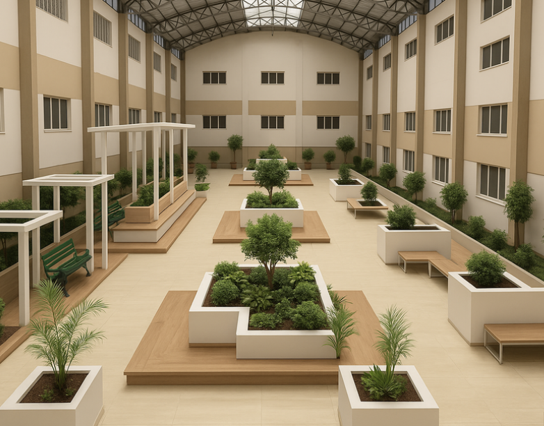
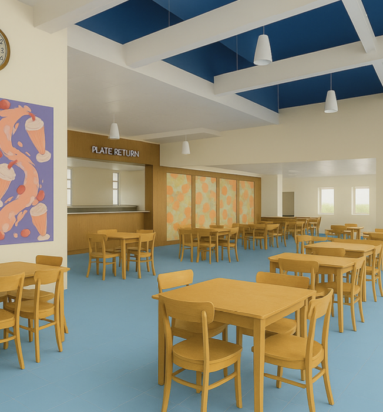
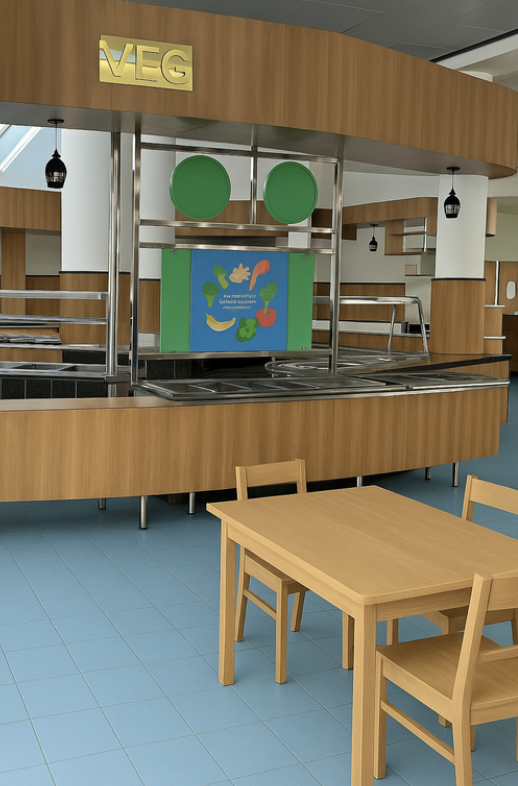
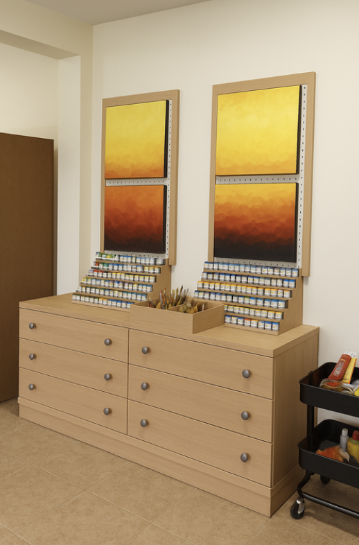

Good Shepherd’s International School

Overview
Good Shepherd International School in Ooty is one of India's premier residential schools. Its 180-acre campus in the Nilgiris holds a wide range of buildings and facilities for students and staff — more than 1,50,000 square feet of built space serving a community of around 850 students. Founded in 1977, the school spans two campuses: Fernhill, built around the former summer palace of the Maharaja of Baroda, for its youngest students, and Palada for the middle and senior school. When the school approached us, it was not to build a new campus but to rethink an existing one: to reimagine its spaces — its interiors and its signage — with a more child-centric approach.
Revitalisation is a different kind of architectural work. On a new campus, the architect starts with an empty site. On an established one, every decision begins with what is already there: buildings with their own histories, routines developed over decades, and a community deeply attached to the place. Our task was to understand the campus as it was, identify what was working and what was not, and make changes that improve life for students and staff without losing the character that makes the school what it is.
We began by looking at the campus through the eyes of its students. A child-centric approach means asking how children actually experience a place: how they find their way, where they gather, where they feel at ease and where they feel lost, which spaces they love and which they avoid. On a 180-acre site spread across hilly terrain, those questions matter a great deal. A campus that is easy for adults to navigate can still be confusing and intimidating for a young child.
Interiors came first. Many of the school's spaces had been designed for function rather than for children. We redesigned the dormitories, the dining halls and the library to make them brighter, warmer and better suited to how children learn and live. In a residential school, interiors matter more than usual: these are the spaces where students spend their evenings, make friends and find a sense of home far from their families. In Ooty's cool climate, warmth and comfort indoors are especially important.
Signage came second. Wayfinding is often overlooked, but on a large campus it shapes how confidently children move around. We developed a new signage system for the school, designed to be clear, legible and friendly, so that students — especially new and younger ones — can find their way without anxiety. Good signage also strengthens a school's identity, giving the campus a consistent visual language.
Coming two years after the National Education Policy 2020, the work reflects the policy's focus on the wellbeing of the learner and on joyful, engaging places to learn. The new wayfinding in particular was designed to be inclusive, easy for every child to read and use, in keeping with the policy's emphasis on inclusion.
The work was carried out over two years, with spaces across the campus redesigned in turn. Working within a functioning school requires careful phasing, so that changes can be made without disrupting the daily life of students and staff. We worked closely with the school throughout, fitting the programme around its calendar and priorities.
Good Shepherd reflects a growing part of our practice: the revitalisation of existing campuses. Many of India's established schools have strong foundations but spaces that no longer meet the needs of today's students. With careful, child-centred design, these campuses can be renewed — preserving what makes them special while giving their students the environment they deserve.
Architects — Kumar & Swamy Architects, Bangalore




